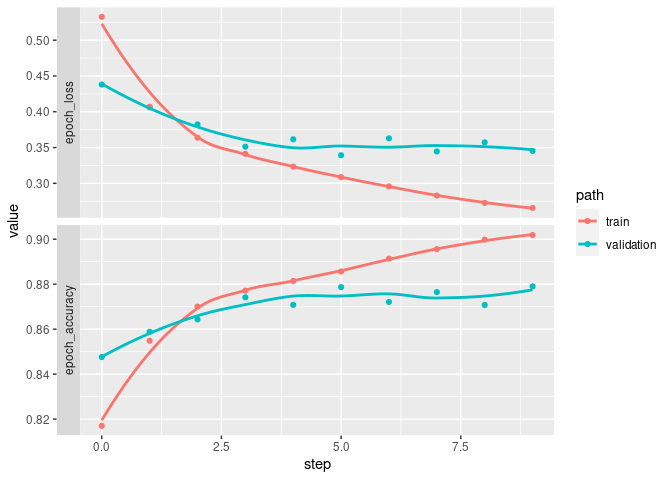
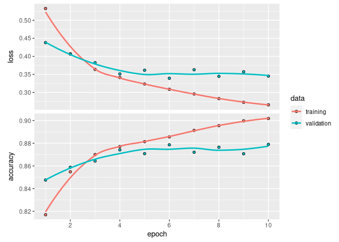

example_keras
Here is an example showing how to use guildai with TensorFlow and Keras in R.
If this is your first exposure to guildai, we recommend starting with the framework agnostic “Getting Started” guide. This example assumes familiarity with guild concepts like flags and scalars.
We’ll start with an example R script, named “train.R”, that trains, evaluates, and saves a Keras model using the fashion mnist dataset. Here is what it looks like:
library(tensorflow)
library(keras)
use_virtualenv("r-tensorflow")
# Prepare data --------------------------------------------------------
fashion_mnist <- dataset_fashion_mnist()
c(train_images, train_labels) %<-% fashion_mnist$train
c(test_images, test_labels) %<-% fashion_mnist$test
train_images <- train_images / 255
test_images <- test_images / 255
# Define model --------------------------------------------------------
units <- 64
model <-
keras_model_sequential(input_shape = c(28, 28)) %>%
layer_flatten() %>%
layer_dense(units = units, activation = 'relu') %>%
layer_dense(units = 10, activation = 'softmax')
learning_rate <- 0.001
model %>% compile(
optimizer = optimizer_adam(learning_rate),
loss = 'sparse_categorical_crossentropy',
metrics = c('accuracy')
)
model
# Fit model -----------------------------------------------------------
batch_size <- 32
epochs <- 10
history <- model %>%
fit(train_images, train_labels,
validation_split = 0.2,
batch_size = batch_size,
epochs = epochs,
callbacks = list(callback_tensorboard()),
verbose = 2)
plot(history)
# Evaluate model ------------------------------------------------------
score <- model %>%
evaluate(test_images, test_labels,
verbose = 0) %>%
as.list()
cat('test_loss:', score$loss, "\n")
cat('test_accuracy:', score$accuracy, "\n")
# Save model ----------------------------------------------------------
save_model_tf(model, "model.keras")
saveRDS(history, "history.rds")A few things to note about the script:
- There is no ‘guildai’ specific configuration anywhere in the script.
It’s a regular R script, that you would normally
source(). - Flags like
batch_size,epochs, andunitsare can be defined anywhere in the script. We take advantage of this by defining flags close to their point of use. -
callback_tensorboard()in the list of callbacks provided to thefit()call will result in tfevent records being written during training. Guild will automatically parse these logs for scalars. - In addition to the tensorboard logs, we are also directly printing
two scalars named
test_lossandtest_accuracyto stdout. - At the end of the run, we save the model and training history. These file artifacts will be stored as part of the run, enabling us to restore a trained model.
With our script defined, we can launch a guild run:
library(guildai)
guild_run("train-keras.R")
## > library(tensorflow)
## > library(keras)
## > use_virtualenv("r-tensorflow")
## > # Prepare data --------------------------------------------------------
## >
## > fashion_mnist <- dataset_fashion_mnist()
## > c(train_images, train_labels) %<-% fashion_mnist$train
## > c(test_images, test_labels) %<-% fashion_mnist$test
## > train_images <- train_images / 255
## > test_images <- test_images / 255
## > # Define model --------------------------------------------------------
## >
## > units <- 64
## > model <-
## + keras_model_sequential(input_shape = c(28, 28)) %>%
## + layer_flatten() %>%
## + layer_dense(units = units, activation = 'relu') %>%
## + layer_dense(units = 10, activation = 'softmax')
## > learning_rate <- 0.001
## > model %>% compile(
## + optimizer = optimizer_adam(learning_rate),
## + loss = 'sparse_categorical_crossentropy',
## + metrics = c('accuracy')
## + )
## > model
## Model: "sequential"
## ________________________________________________________________________________
## Layer (type) Output Shape Param #
## ================================================================================
## flatten (Flatten) (None, 784) 0
## dense_1 (Dense) (None, 64) 50240
## dense (Dense) (None, 10) 650
## ================================================================================
## Total params: 50,890
## Trainable params: 50,890
## Non-trainable params: 0
## ________________________________________________________________________________
## > # Fit model -----------------------------------------------------------
## >
## > batch_size <- 32
## > epochs <- 10
## > history <- model %>%
## + fit(train_images, train_labels,
## + validation_split = 0.2,
## + batch_size = batch_size,
## + epochs = epochs,
## + callbacks = list(callback_tensorboard()),
## + verbose = 2)
## Epoch 1/10
## WARNING:tensorflow:Callback method `on_train_batch_end` is slow compared to the batch time (batch time: 0.0019s vs `on_train_batch_end` time: 0.0049s). Check your callbacks.
## 1500/1500 - 4s - loss: 0.5326 - accuracy: 0.8170 - val_loss: 0.4381 - val_accuracy: 0.8476 - 4s/epoch - 3ms/step
## Epoch 2/10
## 1500/1500 - 3s - loss: 0.4070 - accuracy: 0.8548 - val_loss: 0.4061 - val_accuracy: 0.8588 - 3s/epoch - 2ms/step
## Epoch 3/10
## 1500/1500 - 3s - loss: 0.3638 - accuracy: 0.8700 - val_loss: 0.3824 - val_accuracy: 0.8643 - 3s/epoch - 2ms/step
## Epoch 4/10
## 1500/1500 - 2s - loss: 0.3413 - accuracy: 0.8771 - val_loss: 0.3512 - val_accuracy: 0.8742 - 2s/epoch - 2ms/step
## Epoch 5/10
## 1500/1500 - 3s - loss: 0.3234 - accuracy: 0.8814 - val_loss: 0.3615 - val_accuracy: 0.8708 - 3s/epoch - 2ms/step
## Epoch 6/10
## 1500/1500 - 4s - loss: 0.3087 - accuracy: 0.8856 - val_loss: 0.3392 - val_accuracy: 0.8787 - 4s/epoch - 3ms/step
## Epoch 7/10
## 1500/1500 - 3s - loss: 0.2958 - accuracy: 0.8914 - val_loss: 0.3629 - val_accuracy: 0.8721 - 3s/epoch - 2ms/step
## Epoch 8/10
## 1500/1500 - 3s - loss: 0.2829 - accuracy: 0.8956 - val_loss: 0.3445 - val_accuracy: 0.8765 - 3s/epoch - 2ms/step
## Epoch 9/10
## 1500/1500 - 3s - loss: 0.2726 - accuracy: 0.8998 - val_loss: 0.3572 - val_accuracy: 0.8708 - 3s/epoch - 2ms/step
## Epoch 10/10
## 1500/1500 - 3s - loss: 0.2656 - accuracy: 0.9018 - val_loss: 0.3453 - val_accuracy: 0.8790 - 3s/epoch - 2ms/step
## > plot(history)
## > # Evaluate model ------------------------------------------------------
## >
## > score <- model %>%
## + evaluate(test_images, test_labels,
## + verbose = 0) %>%
## + as.list()
## > cat('test_loss:', score$loss, "\n")
## test_loss: 0.366027534008026
## > cat('test_accuracy:', score$accuracy, "\n")
## test_accuracy: 0.868799984455109
## > # Save model ----------------------------------------------------------
## >
## > save_model_tf(model, "model.keras")
## > saveRDS(history, "history.rds")Inspecting the run flags and scalars:
run <- runs_info(1)
str(run$flags)
## tibble [1 × 4] (S3: tbl_df/tbl/data.frame)
## $ batch_size : num 32
## $ epochs : num 10
## $ learning_rate: num 0.001
## $ units : num 64
str(run$scalars)
## tibble [1 × 4] (S3: tbl_df/tbl/data.frame)
## $ test_accuracy: num 0.869
## $ test_loss : num 0.366
## $ train : tibble [1 × 2] (S3: tbl_df/tbl/data.frame)
## ..$ epoch_accuracy: num 0.902
## ..$ epoch_loss : num 0.266
## $ validation : tibble [1 × 4] (S3: tbl_df/tbl/data.frame)
## ..$ epoch_accuracy : num 0.879
## ..$ epoch_loss : num 0.345
## ..$ evaluation_accuracy_vs_iterations: num 0.869
## ..$ evaluation_loss_vs_iterations : num 0.366runs_info() returns the last value for each scalar. The
full history of scalars emitted is available with
runs_scalars().
all_scalars <- runs_scalars(1)
all_scalars |>
dplyr::arrange(step)
## # A tibble: 64 × 5
## run path tag value step
## <chr> <chr> <chr> <dbl> <dbl>
## 1 27be6d49aa384099aa325d0e25f1c1b5 <NA> test_loss 0.366 0
## 2 27be6d49aa384099aa325d0e25f1c1b5 <NA> test_accuracy 0.869 0
## 3 27be6d49aa384099aa325d0e25f1c1b5 validation epoch_loss 0.438 0
## 4 27be6d49aa384099aa325d0e25f1c1b5 validation epoch_accuracy 0.848 0
## 5 27be6d49aa384099aa325d0e25f1c1b5 train epoch_loss 0.533 0
## 6 27be6d49aa384099aa325d0e25f1c1b5 train epoch_accuracy 0.817 0
## 7 27be6d49aa384099aa325d0e25f1c1b5 validation epoch_loss 0.406 1
## 8 27be6d49aa384099aa325d0e25f1c1b5 validation epoch_accuracy 0.859 1
## 9 27be6d49aa384099aa325d0e25f1c1b5 train epoch_loss 0.407 1
## 10 27be6d49aa384099aa325d0e25f1c1b5 train epoch_accuracy 0.855 1
## # … with 54 more rowsWe can plot scalars vs step for the full training history:
library(dplyr)
##
## Attaching package: 'dplyr'
## The following objects are masked from 'package:stats':
##
## filter, lag
## The following objects are masked from 'package:base':
##
## intersect, setdiff, setequal, union
library(ggplot2)
all_scalars %>%
filter(tag %in% c("epoch_accuracy", "epoch_loss")) %>%
mutate(tag = forcats::fct_rev(tag)) %>%
ggplot(aes(x = step, y = value, color = path)) +
facet_grid(rows = vars(tag), switch = 'y', scales = 'free_y') +
geom_point() + geom_smooth(se = FALSE)
## `geom_smooth()` using method = 'loess' and formula = 'y ~ x'
We can compare this to the history object from
fit() we saved in the run. It is indeed the same.
list.files(run$dir)
## [1] "history.rds" "logs" "model.keras" "plots"
## [5] "train-keras.R"
history <- readRDS(file.path(run$dir, "history.rds"))
library(keras) # to load the plot.keras_training_history() method
plot(history)
Finally, we can load the model trained during the run by accessing the saved files directly.
model <- load_model_tf(file.path(run$dir, "model.keras"))
model
## Model: "sequential"
## ________________________________________________________________________________
## Layer (type) Output Shape Param #
## ================================================================================
## flatten (Flatten) (None, 784) 0
## dense_1 (Dense) (None, 64) 50240
## dense (Dense) (None, 10) 650
## ================================================================================
## Total params: 50,890
## Trainable params: 50,890
## Non-trainable params: 0
## ________________________________________________________________________________